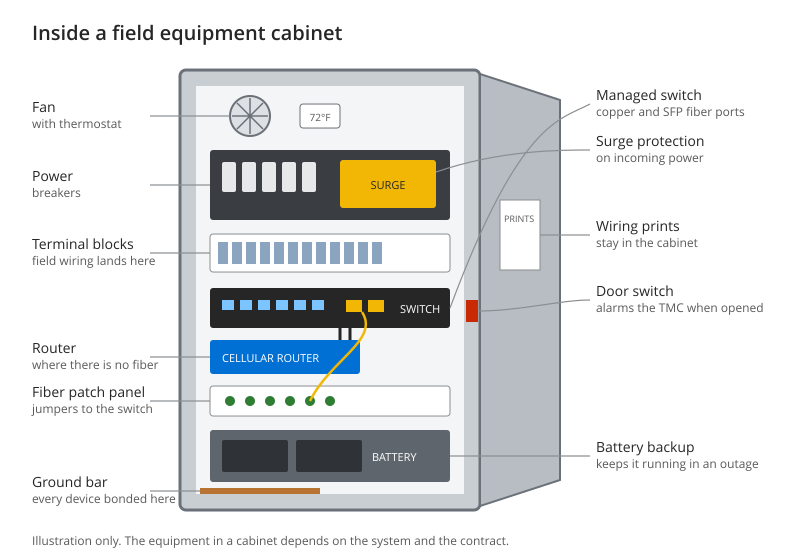

Phase 6: Equipment installation
In one sentence: phase 6 puts the approved equipment in the cabinets and on the poles.

Inside the cabinet
Power supplies, surge protection, terminal blocks, Ethernet and fiber switches, routers, patch panels, and UPS or battery backup systems. See Equipment cabinets, Network equipment: switches, routers, SFPs and cellular and Surge protection.
Power at remote sites
Solar charge controllers, batteries and PV panels. See Solar power and LiFePO4 batteries.
Field devices
Cameras, detection equipment, network radios, sensors and signs. See CCTV cameras and video and Vehicle detection.
PM focus
- Install only what was approved in the submittal: model numbers must match.
- Record serial numbers as the equipment is installed; Caltrans will ask for them.
- Keep the manuals and warranty papers from every box; they go in the closeout package. See Closeout package checklist.
Common mistakes / what Caltrans actually checks
- Installing a substituted model that was never approved.
- Throwing away manuals and warranty cards with the packaging.
- No serial number list.